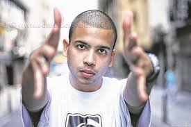
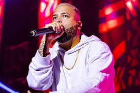

O Projota
Um rapper, compositor e ator brasileiro
Sobre os anos iniciais do Projota
Em 2006, Projota ingressou pela primeira vez em uma batalha de MC. Conseguiu vencer por quatro vezes a Batalha do Santa Cruz, três a Rinha dos MCs e chegou à final da Liga dos MCs de 2007, o evento mais tradicional do estilo no país. Paralelamente à carreira de duelador, Projota trabalhava com A.G. Soares, do Pentágono, um consagrado produtor musical. O rapper fez uma participação no documentário Freestyle: Um Estilo de Vida, onde deu uma entrevista. Entre as principais músicas gravadas por Projota, entre 2006 e 2008, estão O Poeta, Ela e Avoadão. No ano de 2008, Projota lançou a música e o videoclipe de Acabou, que rapidamente adquiriu alta popularidade no YouTube, alcançando número superior a 400.000 visualizações em dois anos. Em 2008, ele iniciou a gravação das músicas do seu primeiro EP, que foi lançado em novembro de 2009 sob o título Carta aos Meus. As faixas destacadas do disco são Rato de Quermesse, O Rap em Ação e Véia, nesta última ele faz uma referência à sua mãe, que faleceu quando ele tinha apenas 7 anos de idade. Foi feito sem a participação de outro rapper, mas com algumas faixas produzidas por A.G. Soares e DJ Caíque e pelo próprio Projota.
Projota começou a ganhar notoriedade nas batalhas de MCs, onde venceu quatro vezes a Batalha da Santa Cruz e três vezes a Rinha dos MCs. Como produtor musical, Projota produz em geral para seus trabalhos e para amigos. Em sua estreia, Projota lançou o EP Carta aos Meus em 2009; seu segundo trabalho foi a mixtape Projeção, lançada em 2010; seu terceiro trabalho foi o segundo EP de sua carreira, Projeção pra Elas, lançado em 2010; e sua quarta mixtape, Muita Luz, foi lançada em 2013. Seu álbum de estreia, gravado pela Universal Music, conta com faixas novas e de suas mixtape.
No início de 2010, em parceria com DJ Caíque, Projota lançou na internet um novo som, chamado "Pelo Amor", que alcançou o primeiro lugar no MySpace Brasil. Em setembro de 2010, foi terminado o processo de gravação da sua mixtape, intitulada Projeção. Com 19 faixas, ela traz algumas das músicas de "Carta aos Meus", outras faixas já conhecidas e inéditas. Entre as inéditas, se destacam: "Projeção", "Samurai" e "Chuva de Novembro". Com o lançamento do web vídeo "Muleque Doido" no final de 2010, Projota anunciou para o início de 2011 o lançamento de um novo EP, chamado Projeção pra Elas, com faixas românticas. "Muleque Doido" atingiu o topo dos trending topics do Twitter brasileiro. Projeção pra Elas foi lançado em 10 de fevereiro de 2011, com nove (9) faixas, entre inéditas e conhecidas como "Guerreira" e a já citada "Muleque Doido".
Em 2012, lançou seu primeiro DVD, Realizando Sonhos, gravado no Master Hall, em Curitiba, no dia 27 de novembro de 2011 O disco contém 20 faixas e ajudou a Projota a se aclamar na mídia como um dos principais representantes da nova escola do rap.Muita Luz é o quinto trabalho de Projota no formato de mixtape sob gravação independente. A mixtape foi lançada no dia 11 de abril de 2013 e contém 19 faixas, com participações especiais de diversos artistas e produtores, entre eles Filipe Ret, Drik Barbosa, André Maini, Marlos Vinicius, Skeeter, Laudz, Yago Loyola, Zap San e DJ Caíque.
"Música é a alma que fala,
quando as palavras se perdem."José Tiago Sabino Pereira
Curiosidades do cantor
- Origem do nome: É uma fusão de Profissional e Jota (iniciais de José Tiago).
- Talento precoce: Aprendeu a tocar violão sozinho aos 11 anos e compunha rimas antes mesmo de se aprofundar no rap
- "Careta" do Rap: Projota orgulha-se de nunca ter usado drogas, nem fumado ou ficado bêbado, atribuindo sua trajetória correta à música.
- Torcedor Fanático: O rapper é fã incondicional do Santos Futebol Clube, já tendo escrito letras sobre o time, Pelé e Neymar.
- Viciado em Games: Apaixonado por jogos, Projota já teve um canal de games ("Proj Game Room") e joga títulos como Valorant, FIFA e The Last of Us.
- Relação com a morte: A temática da perda é recorrente em suas músicas, aparecendo em cerca de 90% de suas composições, muitas vezes inspirada pela morte de sua mãe quando ele era criança.
"Vários me disseram que eu nunca ia chegar, duvidei."
José Tiago Sabino Pereira
Mídias


 Assista as Músicas Aqui!
Assista as Músicas Aqui!
Mais Informações:
Você pode conhecer mais sobre o Rapper Clicando aqui!